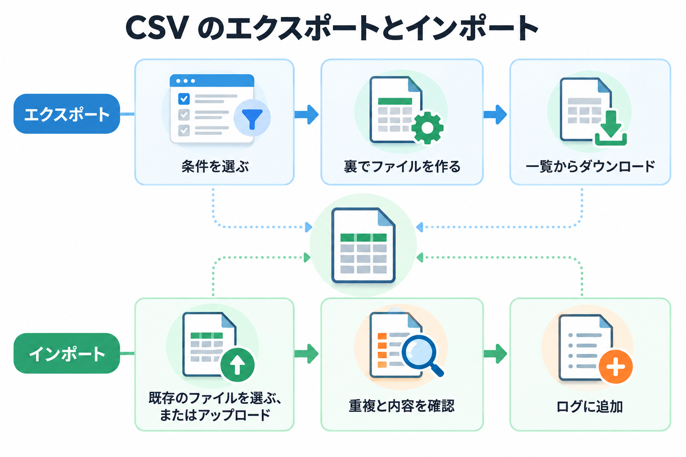
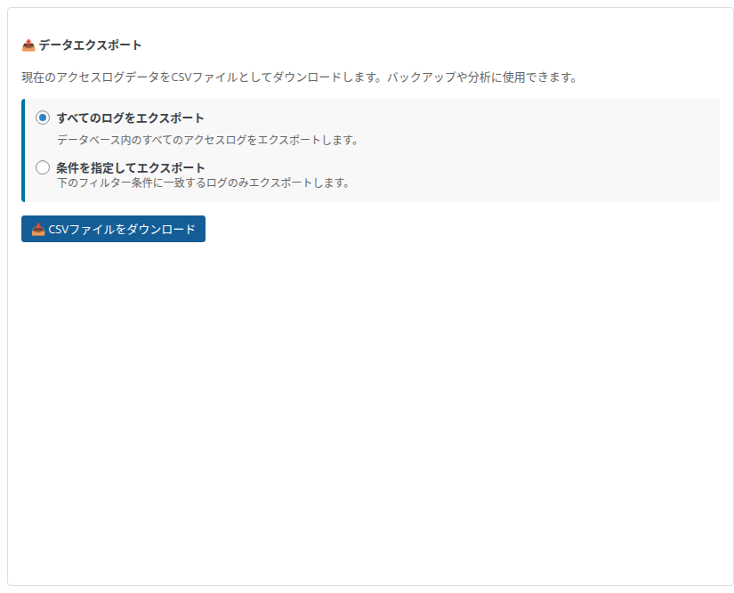
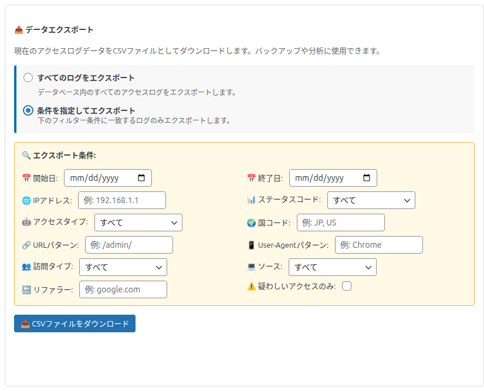
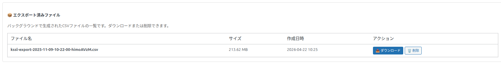
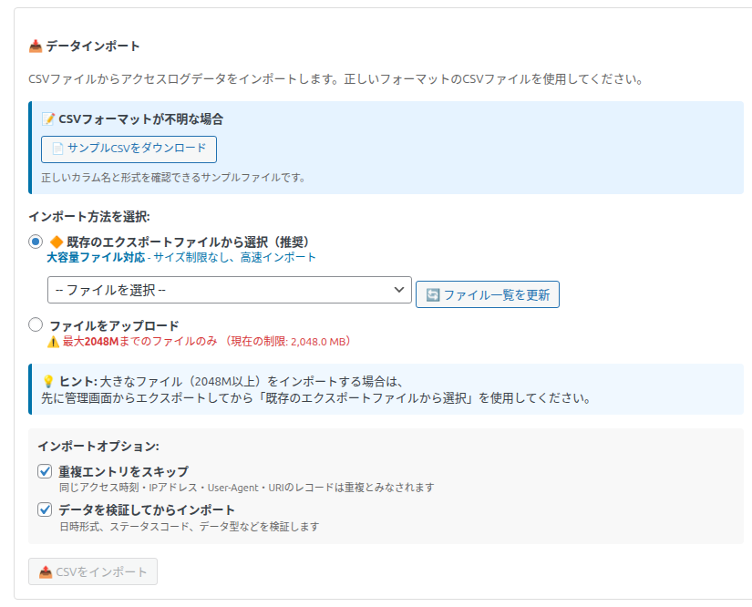
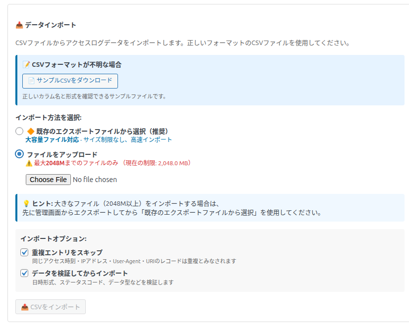

CSV エクスポート・インポート
ログを CSV ファイルに書き出して保存・分析したり、CSV ファイルからログを取り込んだりできます。

「ログの管理」タブの「📁 CSV インポート・エクスポート」の区画で操作します。
📤 データエクスポート

ログを CSV ファイルに書き出します。バックアップや、表計算ソフトでの分析に使えます。
エクスポートの範囲
| 選択肢 | 内容 |
|---|---|
| すべてのログをエクスポート（初期値） | 保存しているすべてのログを書き出します。 |
| 条件を指定してエクスポート | 黄色い「🔍 エクスポート条件:」の枠が開き、条件に合うログだけを書き出します。 |

エクスポートの条件（11 項目）
空欄の条件は使われません。複数の条件は、すべてに当てはまるログが対象です。
| 条件 | 絞り込み方 |
|---|---|
| 📅 開始日 / 📅 終了日 | その 2 日を含む日単位の範囲。WordPress の「一般設定」のタイムゾーンの 1 日として扱います。 |
| 🌐 IPアドレス | IP アドレスの一部に一致 |
| 📊 ステータスコード | 「すべて」または 200 (成功) / 301 (恒久的リダイレクト) / 302 (一時的リダイレクト) / 400 (不正リクエスト) / 403 (アクセス拒否) / 404 (未検出) / 500 (サーバーエラー) / 503 (サービス利用不可) のどれかと一致 |
| 🤖 アクセスタイプ | 「すべて」/「通常アクセス」（ボット以外）/「ボット」 |
| 🌍 国コード | 国コードと完全に一致。カンマで区切って複数書けます（例: JP, US）。 |
| 🔗 URLパターン | ページのパスの一部に一致（例: /admin/） |
| 📱 User-Agentパターン | User-Agent の一部に一致（例: Chrome） |
| 🔙 リファラー | 参照元の一部に一致（例: google.com） |
| 👥 訪問タイプ | 「すべて」/「新規訪問」/「リピーター（セッション内）」/「リピーター」。「リピーター（セッション内）」に当てはまるログは記録されないため、選ぶと 0 件になります。「ページ遷移」と「不明」は選べません（「すべて」で書き出されます）。 |
| 💻 ソース | 「すべて」/「WordPress」/「静的ページ」 |
| ⚠️ 疑わしいアクセスのみ | ページの URL に疑わしいキーワードを含むログだけ |
手順
範囲（と条件）を選び、「📥 CSVファイルをダウンロード」を押します。
その場ではダウンロードされません。裏でファイルを作り始め、「エクスポート開始中...」「N件をエクスポート中...」と進み具合が表示されます。件数が多いと数分かかります。ページを開いたまま待ちます。
「✓ エクスポート完了！ファイル一覧をご確認ください。」と表示され、下の「📦 エクスポート済みファイル」に追加されます。
一覧の「📥 ダウンロード」を押して、ファイルを保存します。
ファイルの形式
| 項目 | 内容 |
|---|---|
| ファイル名 | kssl-export-日時-英数字8文字.csv |
| 文字コード | UTF-8（先頭に BOM 付き。Excel で開いても文字化けしにくい形式） |
| 見出し | 英語（ID、Time、Visitor ID (Cookie)、IP Address … など、一覧の列名と同じ） |
| 日時 | 世界標準時（UTC）。日本時間にするには 9 時間を足してください。 |
エクスポートは、1 人につき同時に 1 つまでです。実行中にもう一度押すと「エクスポート処理がすでに実行中です。しばらくお待ちください。」と表示されます（5 分以上経つと、新しく始められます）。ログの保存形式の移し替えの仕上げ中は、少し待ってから始まります。
📦 エクスポート済みファイル

| 列・操作 | 内容 |
|---|---|
| ファイル名 / サイズ / 作成日時 | 作ったファイルの情報です。 |
| 📥 ダウンロード | ファイルを保存します。管理者としてログインしている人だけがダウンロードできます。 |
| 🗑️ 削除 | 「このファイルを削除してもよろしいですか？」と確認した後、ファイルを削除します。 |
- ファイルは、外から直接開けない保管場所に置いています。
- ファイルは、自分で削除するかプラグインをアンインストールするまで残ります。容量を取るので、不要になったら削除してください。
- ファイルがないときは「エクスポートされたファイルはありません。」と表示されます。
📥 データインポート
CSV ファイルからログを取り込みます。別のサイトからの移行や、バックアップからの復元に使えます。ログの保存形式を移し替えている途中は使えません。
インポート方法を選択
| 方法 | 内容 |
|---|---|
| 🔶 既存のエクスポートファイルから選択（推奨）（初期値） | 「📦 エクスポート済みファイル」にあるファイルから選びます。画面の説明のとおり「大容量ファイル対応」で、サイズの制限はありません。「-- ファイルを選択 --」のプルダウンから選びます。一覧が古いときは「🔄 ファイル一覧を更新」を押します。選ぶと「✅ 選択されたファイル: N MB - サイズ制限なしでインポート可能」と表示されます。 |
| ファイルをアップロード | パソコンの CSV ファイルを選びます。サーバーの設定で決まる大きさ（画面に「⚠️ 最大 … までのファイルのみ（現在の制限: … MB）」と表示されます。最大 500MB）までです。画面下の「💡 ヒント」のとおり、大きなファイルはいったんエクスポートしてから「既存のエクスポートファイルから選択」を使います。超えるファイルを選ぶと「❌ ファイルサイズが制限を超えています」と表示され、「既存のエクスポートファイルから選択」に切り替えるかを聞かれます。 |


アップロードの上限より大きいファイルは、表計算ソフトなどで複数のファイルに分けてから（各ファイルの 1 行目に見出しを付けて）順に取り込むか、サーバーの管理者にアップロードの上限を上げてもらってください。このサイトで作ったエクスポートファイルなら、「既存のエクスポートファイルから選択」で大きさに関係なく取り込めます。CSV の形式が分からないときは「📄 サンプルCSVをダウンロード」で見本（2 行）を確かめられます。
取り込みのオプション
| オプション（初期値） | 内容 |
|---|---|
| 重複エントリをスキップ（オン） | アクセスの日時・IP アドレス・User-Agent・ページがすべて同じログがすでにあれば、取り込みません。オフにすると重複も取り込みます。 |
| データを検証してからインポート（オン） | 日時が空・正しくない行は取り込まずに飛ばします。応答の番号が 100〜599 の外なら 200 として、出どころの列がなければ「Import」、訪問タイプの列がなければ「不明」として取り込みます。 |
手順
インポート方法を選び、ファイルを選びます。
オプションを確かめ、「📤 CSVをインポート」を押します（ファイルを選ぶまで押せません）。
裏で取り込みが進み、「バックグラウンド処理実行中: N 行を処理済み (M件インポート済み)...」と表示されます。ページを開いたまま待ちます。
終わると「✓ インポート完了」と、取り込んだ件数・スキップした件数・エラーの件数、その内訳（最大 10 行ずつ）が表示され、ページが開き直されます。
結果の見方
| 表示 | 意味 |
|---|---|
| ✓ インポート成功: N件のレコードをインポートしました。 | すべて取り込めました（スキップした行の数も表示）。 |
| ⚠️ 一部インポート成功: N件をインポートしましたが、M件のエラーが発生しました。 | 一部の行を取り込めませんでした。赤い「失敗」の枠で表示されますが、N 件は取り込まれています。 |
| ❌ インポート失敗: N件のレコードが処理されましたが、すべてエラーまたはスキップされました。 | 1 件も取り込めませんでした。重複で飛ばした場合もこの表示になります。 |
| 行 N: 重複データ（…） | 重複のため飛ばした行です。 |
| 行 N: データ検証エラー - 日時が空です / 日時の形式が正しくありません | 日時に問題があり飛ばした行です。 |
| 行 N: カラム数が不足しています | 列の数が足りない行です。 |
| 行 N: データベース挿入エラー | 保存できなかった行です。CSV の ID 列が、すでにあるログの ID と重なっていると起きます。 |
| ⚠ タイムアウト | 10 分経っても終わらないと表示されます。取り込み自体は裏で続いているので、しばらくしてからページを開き直して確かめてください。 |
CSV の ID 列は、そのまま記録の ID として使います。同じサイトのエクスポートファイルを、ログを消さずにもう一度取り込むと、ID が重なった行はエラーになります（重複のスキップで先に飛ばされることが多いです）。バックアップから戻すときは、戻す範囲のログを先に削除してから取り込んでください。